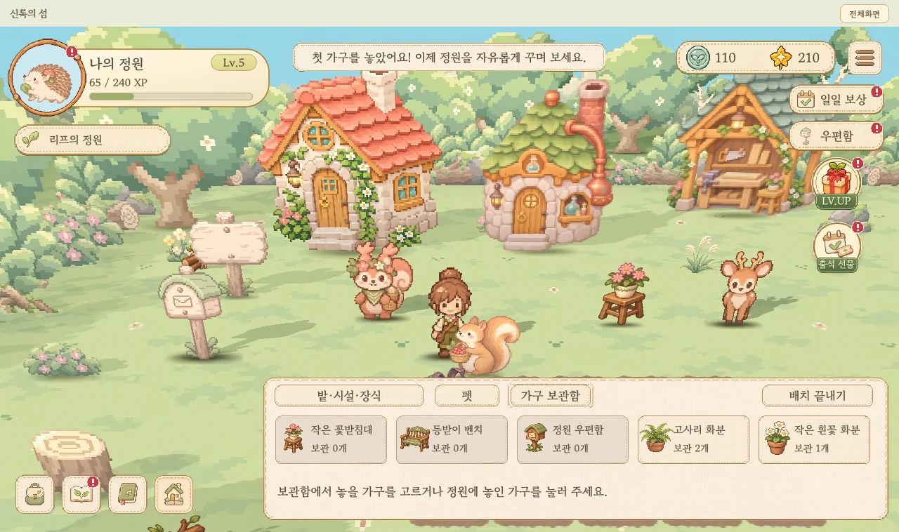
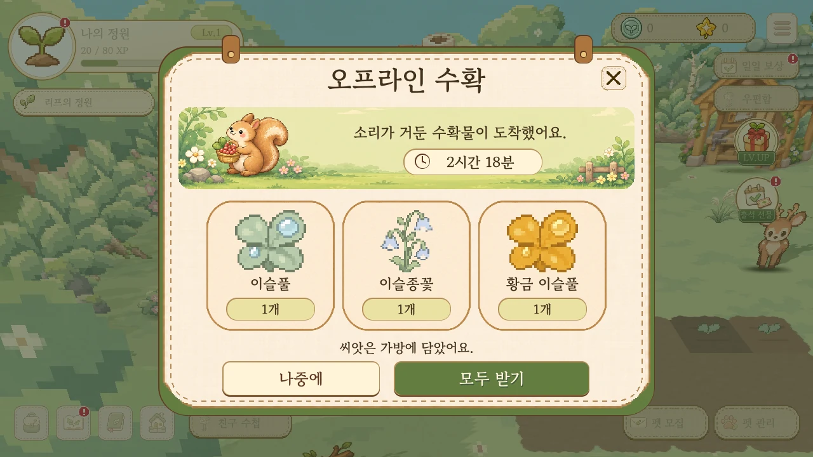

작업 지도로FIELD RECORD / 01
재배 · 정화 개발 중
신록의 섬
ISLE OF VERDURE리프와 함께 꽃을 키우고, 수확한 재료로 만든 물약으로 오염된 밭과 나무를 되살리는 2.5D 정원 게임입니다.
작업 정원과 펫 시스템 기획 · UI·연출 방향 결정 · 플레이
검수 · AI 구현 협업Unity · C# · WebGL
정원을 만들며 고친 것
로그인 전에 첫 수확까지
처음 온 사람이 계정을 만드는 데서 멈추지 않도록 PC 브라우저 게스트 체험을 만들었습니다. 리프에게 씨앗을 받아 밭을 갈고 물을 준 뒤, 첫 물약으로 오염된 밭을 직접 정화합니다. 모집한 소리를 밭 옆에 놓으면 소리가 대신 수확합니다.
5레벨에서 처음 놓는 가구
가구 배치가 열려도 첫 물건을 어디에 놓는지 알기 어려웠습니다. 5레벨 해금 안내를 전부 읽은 뒤 아직 가구를 둔 적이 있나 확인하고, 첫 배치를 확정할 때까지 리프가 안내하도록 했습니다.


첫 가구 배치 · 크게 보기자리를 비운 사이 소리가 거둔 작물
정원에 돌아오면 소리가 거둔 작물의 종류와 수량을 확인합니다. 이번 수확만 가방에 받거나 보관함에 남겨 두며, 다시 접속하거나 수령 요청을 반복해도 같은 작물이 두 번 들어가지 않도록 검증했습니다.


소리의 수확 보고 · 크게 보기